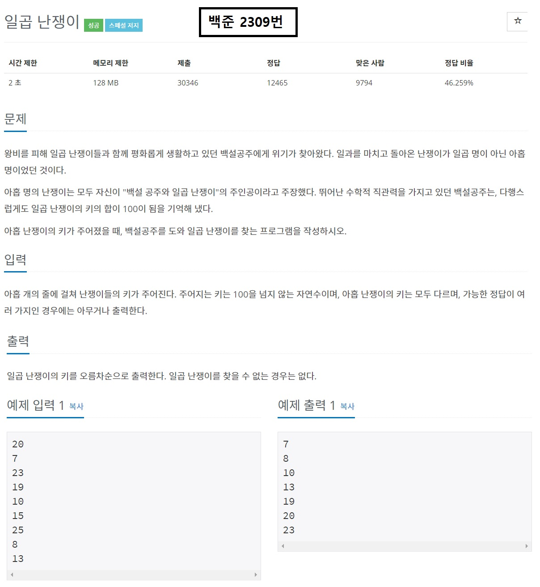
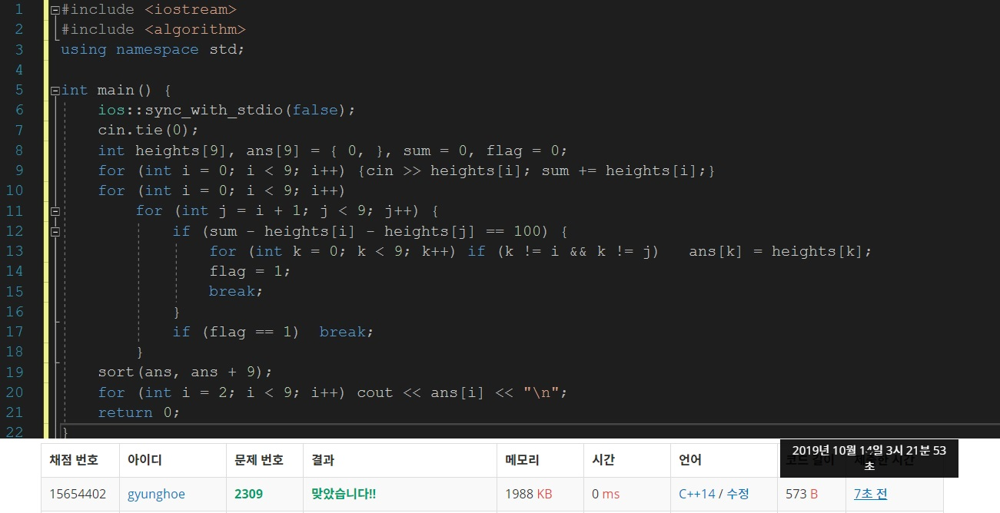

목차
- 브루트 포스란?
- 브루트 포스 문제를 출제하는 이유
- 프루트포스를 이용하여 풀 수 있는 문제
- 브루트 포스의 구현과 주의사항
글을 시작하기에 앞서
-이 글은 [2019-10-13]에 작성된 글입니다. 실제 최신 정보와는 다를 수 있습니다.
-본 게시물은 웹 프로그래밍 실습의 중간 대체과제로 제작된 것으로, 본 블로그 만을 통해 삼성 SW 역량테스트를 준비하는 것을 권하지 않습니다.
1. 브루트 포스(Brute-Force)란?

3자리 비밀번호로 열리는 자물쇠를 2시간 안에 열어야 할 때, 가장 마지막에 할 수 있는 방법은 무엇일까요? 아마 000부터 999까지 모든 경우의 수를 대입해보는 것입니다. 브루트 포스란 말 그대로, 모든 경우의 수를, 어떻게 보면 가장 원시적인 방법으로 시도하는 것입니다.
2. 브루트 포스 문제를 출제하는 이유

브루트 포스 알고리즘은 삼성 SW 역량시험 A형에서 DFS, BFS 다음으로 자주 출제되는 문제 유형 중 하나인데요, 브루트 포스 문제는 DFS와 BFS와 비교할 때 조금 더 신중한 접근이 필요하고, 출제되는 난이도는 비교적 낮지만 실수하기 쉬운 문제입니다. 시험에서는 브루트 포스 문제를 출제함으로써 응시자가 다음과 같은 능력이 있는지 확인할 수 있습니다.
- 최악의 경우 총 몇번의 연산을 해야 문제를 풀 수 있는지 계산할 수 있는 능력
- 문제 해결에 적합한 논리흐름을 구상하는 능력
- 생각을 코드로 나타낼 수 있는 능력
다시 말해, 최대 몇 번의 시도를 하면 문제를 해결 할 수 있고, 모든 시도를 제한 시간 내에 할 수 있음을 알아챌 수 있어야 문제를 해결할 수 있다는 말입니다. 컴퓨터가 1초에 약 1억번의 연산을 할 수 있음을 알고, 제한시간 내에 논리적 허점이 없이 모든 경우의 수를 고려하는 방법을 고안하는 것이 문제 해결의 핵심입니다. 브루트 포스 알고리즘의 경우 잘못 고안할 경우 디버깅에 유난히 시간이 많이 걸리기 때문에 바로 코드를 치기보다는 설계를 더욱 신중하게 하는 것이 중요합니다.
3. 브루트 포스를 이용하여 풀 수 있는 문제
이 문제는 9명의 난쟁이 중 백설공주의 일곱 난쟁이를 찾는 문제입니다. 일곱 난쟁이들의 키의 합이 100이라고 하였으므로 모든 경우의 수를 고려하여, 키의 합이 100이 나오는 순간 난쟁이들의 키를 출력하면 됩니다. 이 문제는 9명 난쟁이의 키의 합에서 2명의 난쟁이 키를 빼는 방법으로 구할 때 최악의 경우 9C2, 즉 36번의 비교를 하게 됩니다. 제한시간인 2초, 즉 2억번의 연산 내에 해결할 수 있습니다.
4. 브루트 포스의 구현과 주의사항
브루트 포스 문제를 풀 때에 주의해야 할 점은 세 가지입니다
- 브루트 포스로 풀 수 있는 문제인가
- 모든 경우의 수를 고려하였는가
- 실제로 모든 항을 꼭 검사해야 하는가
가장 우선적으로 고려해야 할 점은 정말 이 문제가 브루트 포스로 풀 수 있는 문제인지 확인하는 것입니다. 예를 들어, 제한 시간이 2초인데 약 3억번의 연산이 필요한 문제는 브루트 포스로 풀 수 없는 문제입니다.
브루트 포스 문제에서 가장 오답이 많이 발생하는 이유는 모든 경우의 수를 고려하지 않아서입니다. 모든 문제가 그렇지만, 브루트 포스 문제는 특히 입력 조건을 만족하는 범위 내에서의 모든 입력을 고려해야 합니다.
마지막으로, 논리적인 허점이 없다면 문제에 따라 일부 항을 뛰어 넘어야 될 수 있습니다. 모든 항을 검사할 필요가 없는 문제의 경우에는 문제의 조건을 충족하지 않는 영역을 뛰어넘어야 제한 시간 내에 문제를 풀 수 있는 경우가 있습니다.
블로그의 내용이 도움이 되었나요? 저에게 주신 의견을 바탕으로 더 나은 컨텐츠를 만들어갈게요:)